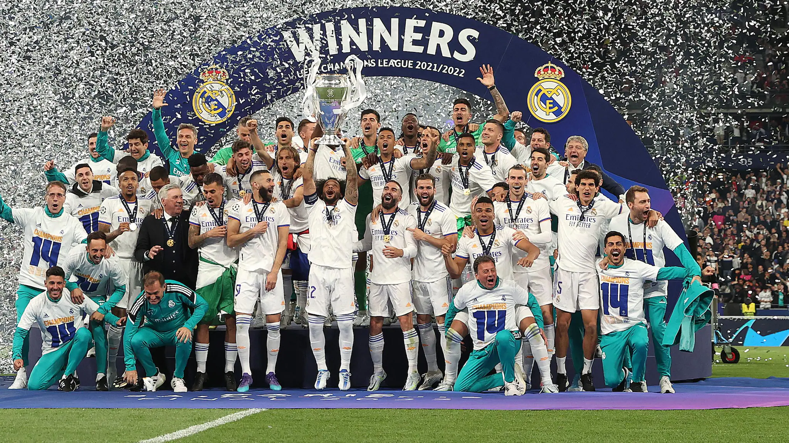
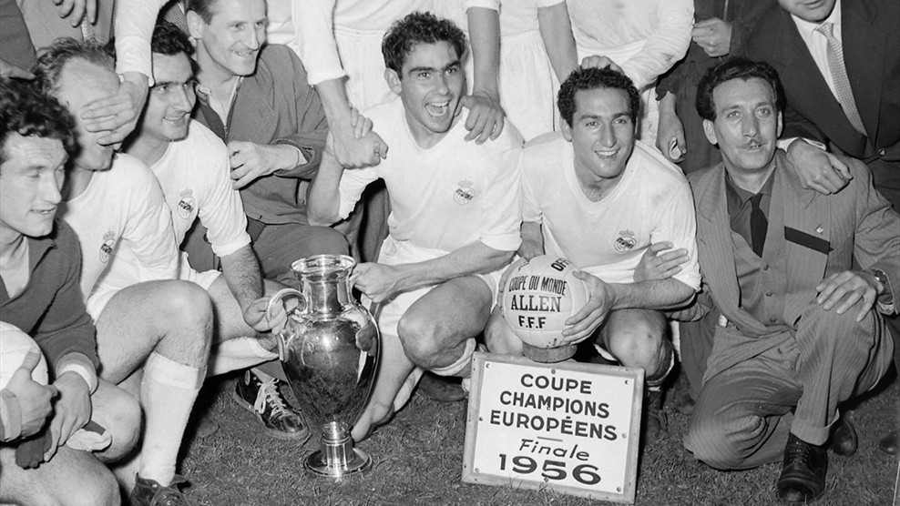

UEFA Champions League Explained:
How the Tournament Works

The UEFA Champions League is one of the most prestigious tournaments in all of sports. Here's everything you need to know about the pre-eminent club soccer tournament in the world, which has been played annually since 1955.
What is the UEFA Champions League?
The UEFA Champions League is a soccer tournament of 32 teams that compete in five rounds for the right to be crowned the best club in European soccer.
When did the UEFA Champions League start?
The first UEFA Champions League tournament was held during the 1955-56 season, and it has been held every year since.

What happens once the 32 teams qualify?
The 32 teams are split into four different "pots," with the restriction that teams from the same association could not be drawn against each other. For the draw, the teams were seeded into four pots based on the following principles:
- Pot 1 contains the Champions League titleholders, the Europa League titleholders and the champions of the top six associations based on their UEFA coefficients. If either the Champions League or Europa League titleholders were one of the champions of the top six associations, the champions of the association ranked seventh, and possibly eighth, are also seeded into Pot 1.
- Pots 2, 3 and 4 contain the remaining teams, seeded based on their 2018 UEFA club coefficients.
- Then, a team is drawn from each pot until there are eight groups of four.
Which teams have won the UEFA Champions League title in previous years?
- Real Madrid : 13 titles (1956, 1957, 1958, 1959, 1960, 1966, 1998, 2000, 2002, 2014, 2016, 2017, 2018
- AC Milan: 7 titles (1963, 1969, 1989, 1990, 1994, 2003, 2007)
- Bayern Munich: 5 titles (1974, 1975, 1976, 2001, 2013)
- Liverpool: 5 titles (1977, 1978, 1981, 1984, 2005)
- Barcelona: 5 titles (1992, 2006, 2009, 2011, 2015)
- Ajax: 4 titles (1971, 1972, 1973, 1995)
- Inter Milan: 3 titles (1964, 1965, 2010)
- Manchester United : 3 titles (1968, 1999, 2008)
- Benfica: 2 titles (1961, 1962)
- Nottingham Forest: 2 titles (1979, 1980)
- Juventus: 2 titles (1985, 1996)
- FC Porto: 2 titles (1987, 2004)
- Celtic: 1 title (1967)
- Feyenoord: 1 title (1970)
- Aston Villa: 1 title (1982)
- Hamburg: 1 title (1983)
- Steaua Bucuresti: 1 title (1986)
- PSV Eindhoven: 1 title (1988)
- Red Star Belgrade: 1 title (1991)
- Marseille: 1 title (1993)
- Borussia Dortmund: 1 title (1997)
- Chelsea: 1 title (2012)